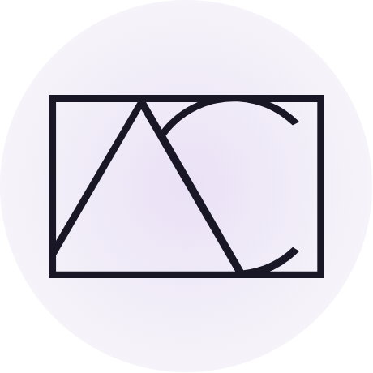
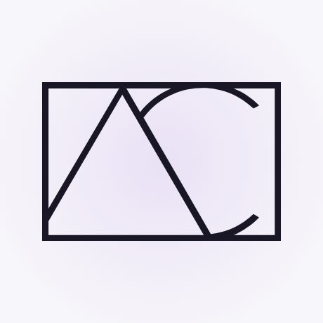
Paper
Ink mark on the light ground. For a light surface — the site, a document, a PDF.
920 · 460 · 400 · round 920 · round 460
Local · tailnet only
The whole palette, the mark at every size the profiles need, and all seven accent fields. Rendered at 2×, then decoded and measured — not judged by eye.
Every tile shows the square beside its round crop. GitHub, X and LinkedIn crop the square for you — upload the square. The round files have a transparent background, for surfaces that want a circle cut in the artwork: decks, documents, favicons.
Each accent field also carries what it corresponds to. This page is local-only and must never be published — it sits in the deployable tree, so netlify.toml forces /social/* to a 404 to keep the names off the live site.
On this page: the palette · neutral grounds · platform-coloured marks · accent fields · social card · what was measured.
Every colour token in the system, parsed out of style.css each time this page is built. Nothing here is copied by hand, so a token added there appears here — and the same parser feeds the private dashboard, so the two cannot disagree.
Six roles, two themes. A cool neutral ground tinted toward the violet passage.
| role | light | dark |
|---|---|---|
--bgpagethe page ground |
#f7f6fa |
#0b0910 |
--surfacebandfull-width bands, cards |
#eeebf6 |
#141120 |
--surface-2surface 2hover fills, ghost-button rest |
#e4dff0 |
#1e1930 |
--fginkbody text, the mark |
#191725 |
#e9e6f2 |
--mutedmutedsecondary text, labels |
#5e5a72 |
#9a94ae |
--rulerulehairline rules and borders |
#dcd6ea |
#272137 |
Derived, not literal — each is a formula over the day's hue, so all seven hues are solved to equal contrast. Sampled on the resting hue (268). Each column sits on a plate of its own theme, because both columns would otherwise follow the reader's theme and one of them would be telling a lie.
| token | light | dark |
|---|---|---|
--accent-fillthe fill of anything carrying a label |
Aahsl(hue sat 58%) |
Aahsl(hue sat 71%) |
--accent-textlinks and toned text on the ground |
Aa linkhsl(hue sat 54%) |
Aa linkhsl(hue sat 63%) |
--accent-washthe day's wash laid over a ground |
95% lightness |
12% lightness |
--hairlineconstruction lines — ink, never the rule colour |
ink 22% |
ink 22% |
--ghost-linethe boundary of a secondary control (wants 3:1) |
ink 50% · 3.33:1 |
ink 50% · 4.55:1 |
--fill-inkthe label colour that sits on a fill |
Aa#ffffff |
Aa#120f1a |
No colour of their own beyond the tonal field. For where the surface should stay quiet.


Ink mark on the light ground. For a light surface — the site, a document, a PDF.
920 · 460 · 400 · round 920 · round 460
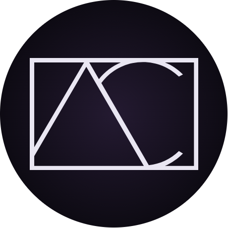
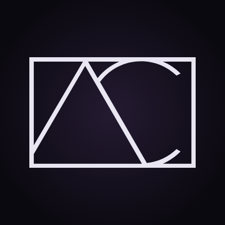
The same on the near-black ground. For a dark surface, or a profile read in dark mode most of the time.
920 · 460 · 400 · round 920 · round 460
The seven accent hues with the mark reversed out of them — the same solved pairs the site's stylesheet carries, with hue, saturation and fill lightness pinned per hue so every one holds the same contrast against its white mark.
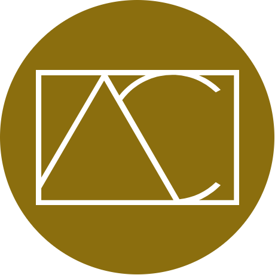
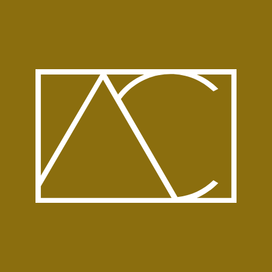
920 · 460 · round 920 · round 460
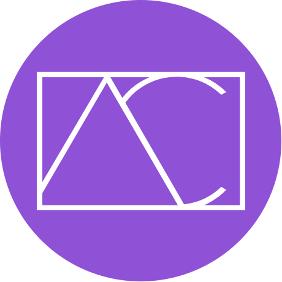
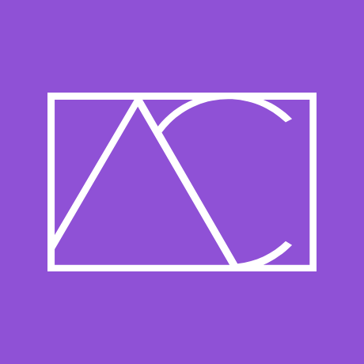
920 · 460 · round 920 · round 460
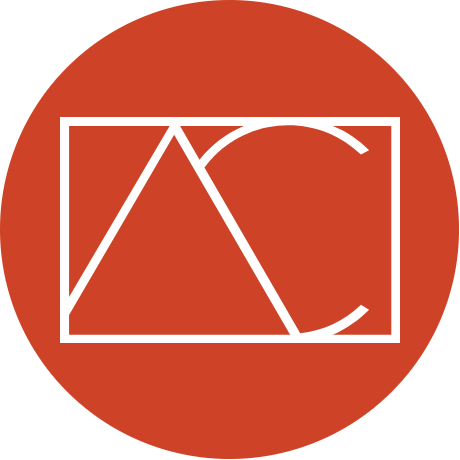
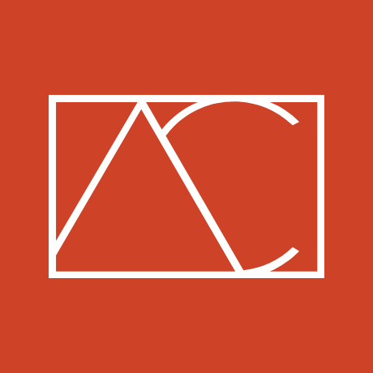
920 · 460 · round 920 · round 460
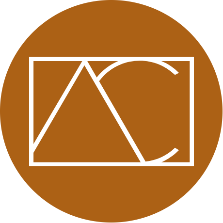
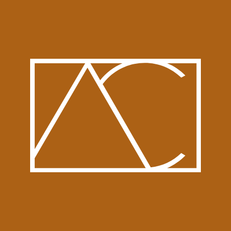
920 · 460 · round 920 · round 460
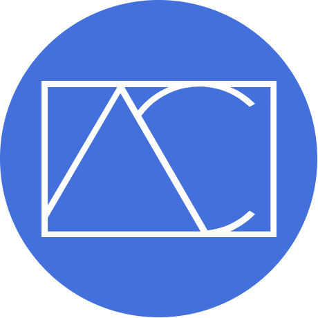
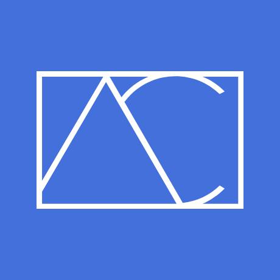
920 · 460 · round 920 · round 460
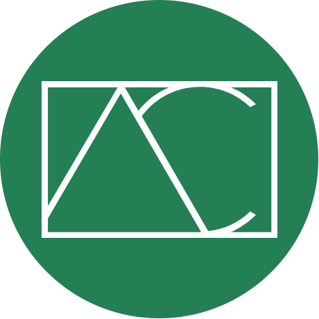
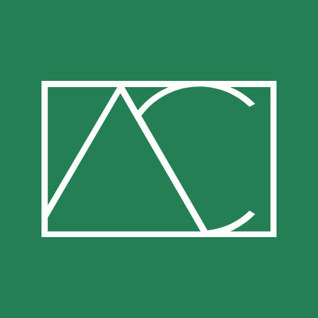
920 · 460 · round 920 · round 460
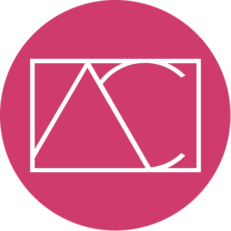
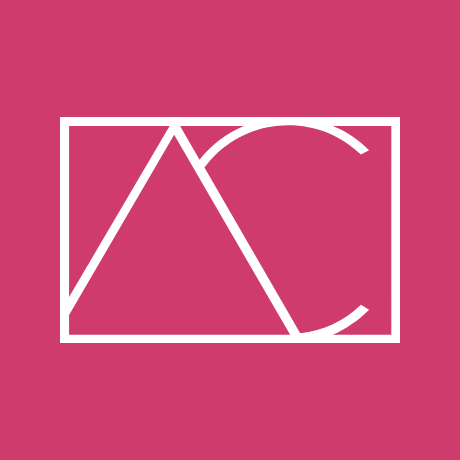
920 · 460 · round 920 · round 460
The mark reversed out of each platform's own brand colour. A deliberate departure from the system — these are other people's colours used so the mark sits beside a platform's chrome; they are not additions to the palette, and nothing here belongs in style.css. The brand hexes are sourced rather than remembered, and the mark colour is solved per brand against WCAG 1.4.11's 3:1 for a non-text graphic.
On GitHub and X the mark is white on a near-black field — the same value that vanishes against your own night ground (1.11:1). Reversed out of a brand field is the one treatment that works for every platform here; the comparison page shows the other two treatments and the four cases that fail. An avatar in a platform's exact brand colour can also read as implying an affiliation — worth a thought on a profile that lists no employer.
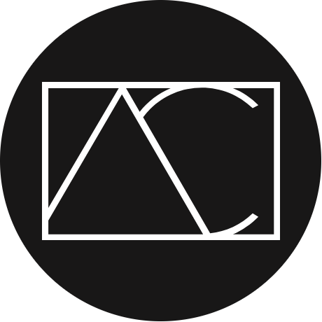
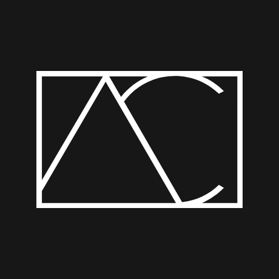
920 · 460 · round 920 · round 460
Simple Icons.
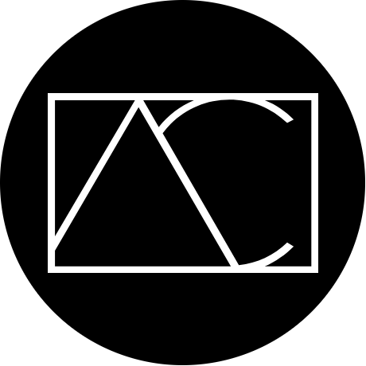
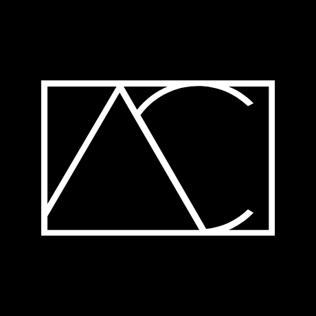
920 · 460 · round 920 · round 460
Simple Icons.
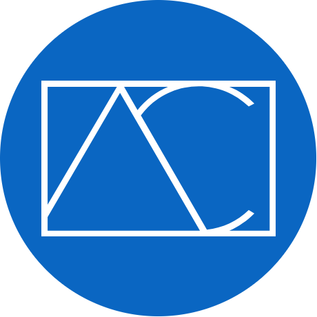
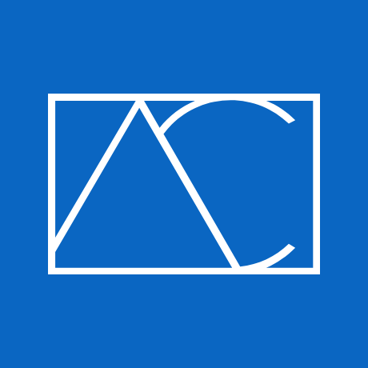
920 · 460 · round 920 · round 460
current brand blue.
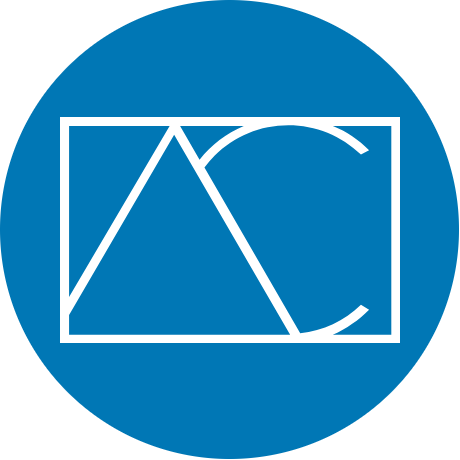
920 · 460 · round 920 · round 460
linkedin.com/legal/api-terms-of-use.
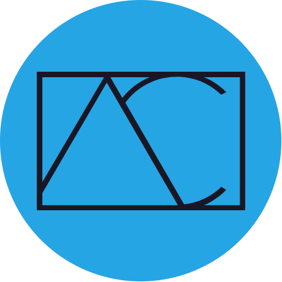
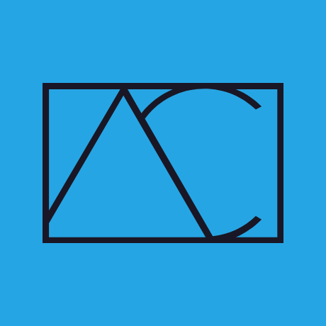
920 · 460 · round 920 · round 460
Simple Icons.
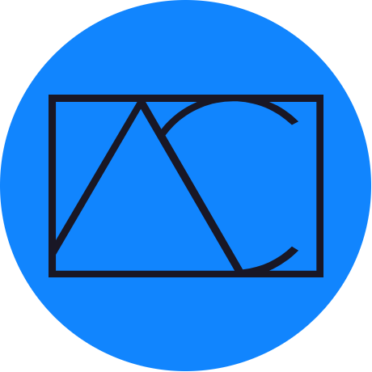
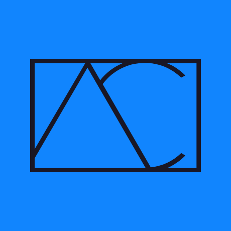
920 · 460 · round 920 · round 460
Simple Icons.
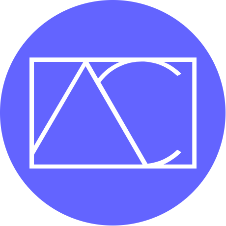
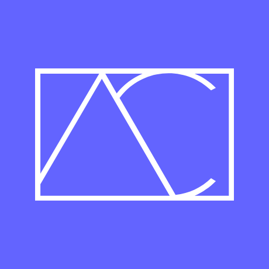
920 · 460 · round 920 · round 460
Simple Icons.
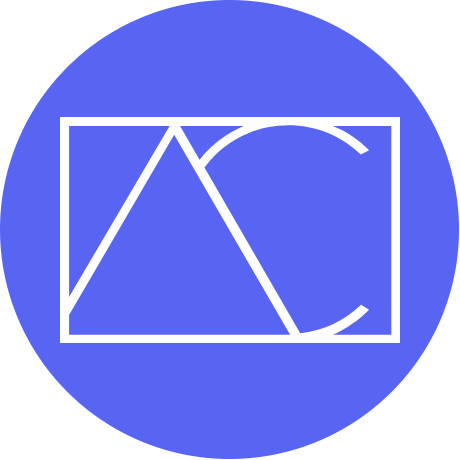
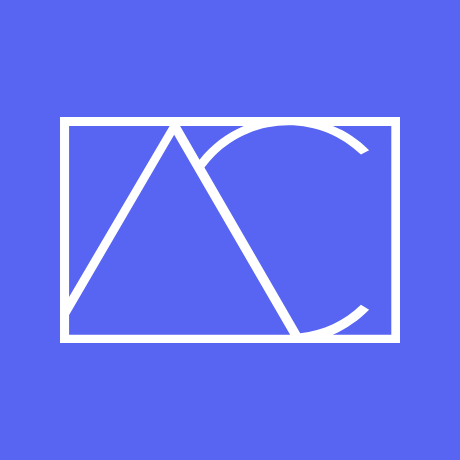
920 · 460 · round 920 · round 460
Simple Icons.
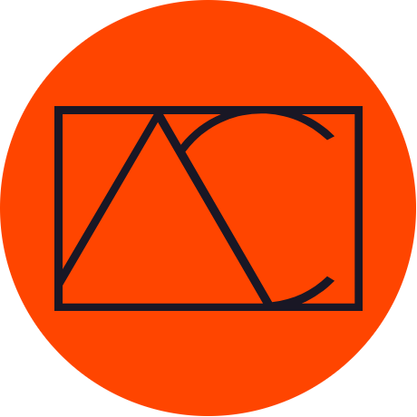
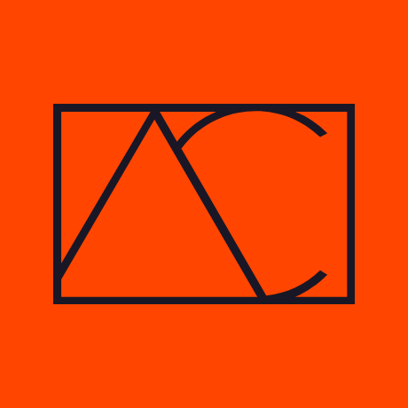
920 · 460 · round 920 · round 460
Simple Icons.
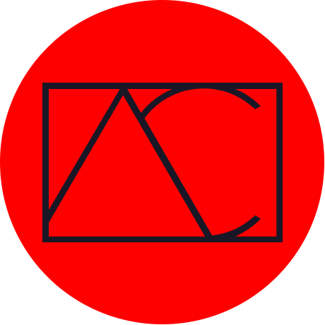
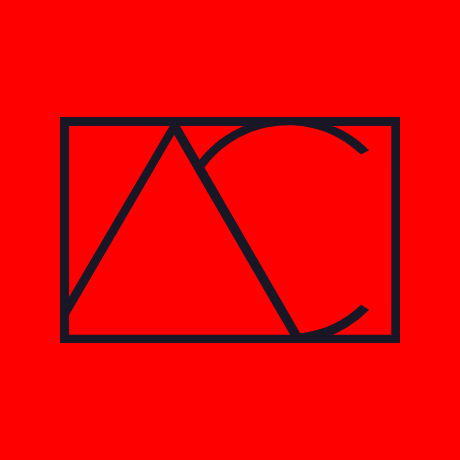
920 · 460 · round 920 · round 460
Simple Icons.
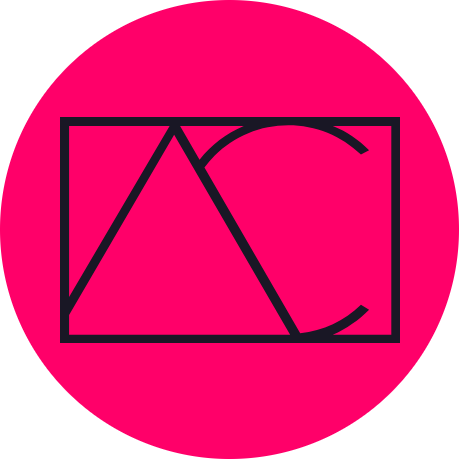
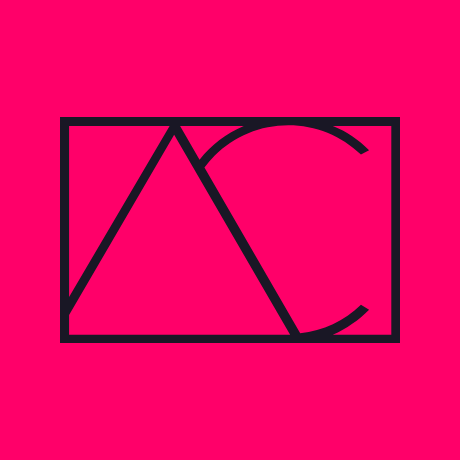
920 · 460 · round 920 · round 460
Simple Icons.
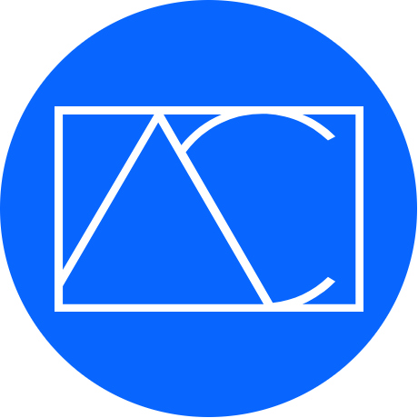
920 · 460 · round 920 · round 460
Simple Icons.
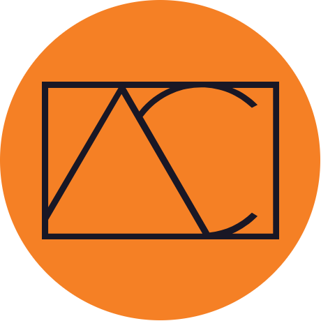
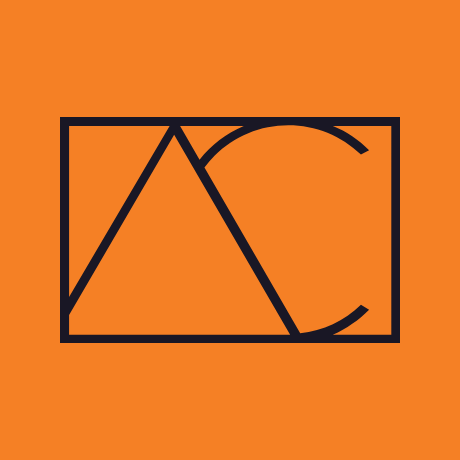
920 · 460 · round 920 · round 460
Simple Icons.
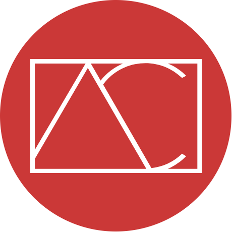
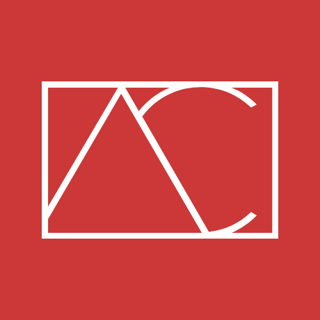
920 · 460 · round 920 · round 460
Simple Icons.
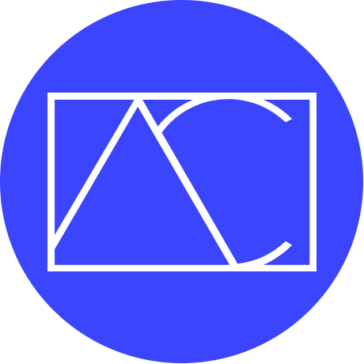
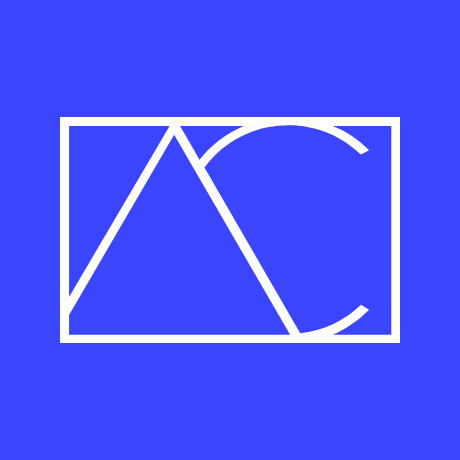
920 · 460 · round 920 · round 460
Simple Icons.
For a repository's Settings → Social preview. Points at github.com/aclayton; regenerate it if the code lands elsewhere.
Each of these was checked by decoding the PNG and reading the pixels. A render that looks right is not evidence that it is.
The mark is wide and drawn in thin strokes, so it needs size to resolve. Below roughly 32px every variant reads as a smudge. A mark that stays legible at favicon size would be a separate drawing cut for that job, not a smaller copy of this one.